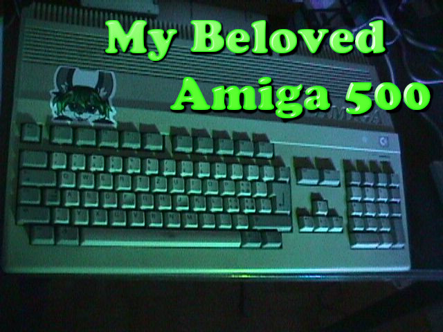
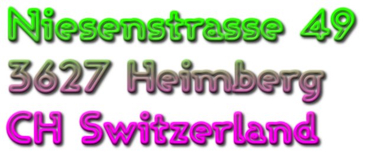

About
me:
I
am Mutz.
A huge nerd and I have a hoarding/collecting
problem. I Study Electronic Music Production, but apart from that,
i really like to mess around with vintage electronics, computers
and mechanical stuff.
I am interested in everything Techy,
from 1960s huge supercomputers that have the calculationpower of a
modern calculator to Modern technologies like Raytracing,
but
not only that, i can get fascinated by Cars, trains, elevators,
space, rockets, satelites, and so much more. I have autism and
ADHD, and so have sometimes some difficulties expressing myself or
staying focussed.
What?
Who? Why?
Why
This Page?
I
created this page, because i wanted to have an outlet to share
my Projects. I have so many things that i want to do, that i am
doing and that i have done. I enjoy sharing my progress a lot
and always get so exited when people aprichiate what i do. It
makes my ADHD be the happyest ADHD on earth.
Projects?
Many
of my projects are very involved and often way above my
capabilities. I then slowly work my way to completing it.
(or
alternatively get overwhelmed and completely abandon the
project, but we dont talk about that. shush~)
ideas,
progress and stuff will be regularly posted on the blog, and if
stuff gets serious, i do document it in the documentation
corner of this page. I also have a place where i archive stuff.
i have many weird and rare computers of the was ago age of
time, and i would like to preserve this kind of stuff here. I
will upload all kinds of stuff i can find and archive it here.
Additionally i might sometimes update you guys on my mental
health here, because i am still not mentally doing too well
|

|
What
I do:
Blogging
Project
status, Progress, Random showerthoughts, ideas and Mental
health status updates all go there, i try to post regularly and
keep interesting stuff there.
To
the blog
|
Documenting
When
i work on my project i want to document my work as good as
possible. I think easy to understand documentation is important
and in the hopes to make my projects as accessable as possible
you will find all the documentation there.
To
the Documentation Libary
|
Archiving
from
ROM dumps over scans of circuitboards to scans of manuals. I
try to archive as much as i can to preserve it from
disappearing. The Internet archive is a good place to start,
but here you will find specifically what I have.
To
the Archive
|
|
Contact
me:
Or
Write me a Letter to:

Why
Analogic?
Its
a longer story, but generally Back a long time ago, i wanted to
have my own website and i came up with this domain. It should
represent a wordplay of combining Analog and Logic. but also the
Furry inside me wanted a funny Butt joke, so i made it in a way,
that the first 4 letters spell a butt joke... i know i am very
majure how did you know?
anyway, if you are interested what i
do apart from this page, i can give you all the links to places:
Youtube
GitHub
Twitch
Discord
BandCamp
DM
me on discord
mutzbunny
|
.JPG)